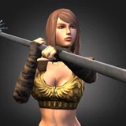

Getting started
Your first match, step by step.
Warspire is played by touch or with a mouse: you tap or drag for everything, and keys are only shortcuts. Controls lists every gesture and The interface names every panel. This page walks you through a first match. For the full sequence with every figure, read How a match works.
Your first match
- Find a match. You are seated with up to 8 players; empty seats are filled by bots. See Matchmaking and lobbies.
- Look at what you have. You start with 5 gold, 100 health and a shop of 5 units. At level 1 they are all tier 1 and 2, costing 1 and 2 gold. See The shop.
- Buy units. A unit you buy from the shop goes to your bench. The first preparation phase is short, 25 seconds, so buy first and tidy up afterwards.
- Take your first item. Round 1 is a loot round: choose one of 3 items, then give it to a unit. Most items are carried by one unit. 20 items are global: they work for your whole warband as soon as chosen and are never given to a unit. See Loot and items.
- Place your warband. Move units from the bench to the board. You may field 3 units at the start, and one more for each level above 3. Put sturdy melee units in front and ranged units behind them. If you leave room, your strongest benched units are placed for you when combat starts; you can turn this off. See Board and bench.
- Watch the fight. Combat runs by itself for at most 45 seconds. If you lose, you lose health for each enemy unit still standing. See Combat and Player damage and elimination.
- Collect your income. After the fight you are paid round gold, win gold, interest and streak gold, plus gold from items such as Tithe Purse and Merchant's Compass if you hold one. You also gain 1 experience and get a new shop for free. See Gold and income.
- Build toward pairs and alliances. Buy second and third copies of units you already own, and units that share an alliance with them. See Star upgrades and How alliances count.
- Choose a commander. In round 10 you pick one of 4 commanders. It joins your board as an extra fighter. See How commanders work.
- Outlast the others. A player at 0 health is out. The last player standing wins, and After the match shows how everyone placed.
Principles for beginners
- Gold in hand earns gold. You earn 1 gold of interest for every 10 gold you hold when combat starts, counting the win gold of that fight, so the marks are 10, 20 and 30 gold. Interest stops growing at 30 gold; past that, spend. See Gold and income.
- Spend down to a mark, not past it. Before combat, check your gold. Starting the fight just below a mark of 10 costs you 1 gold of this round's income, unless the 1 gold for a win lifts you back over it.
- Spend during the fight, not before it. Interest is fixed by the gold you hold when combat starts, so gold you spend while the fight runs does not lower this round's interest. The shop, experience and the bench stay open during combat; only the board is locked until your own fight ends. See Board and bench.
- 3 copies make a star. 3 copies of a unit at the same star combine into one unit a star higher: 3 copies make a 2 star unit and 9 make a 3 star unit. A unit you hold 2 copies of is the best thing to find in the shop. See Star upgrades.
- Copies are shared. Every player draws from one pool, which holds 30 / 20 / 18 / 12 / 10 copies of each unit by tier. If several rivals collect the unit you want, it will be hard to finish. See The shared pool.
- Alliances count different units. An alliance counts the different units on your board; a second copy of the same unit adds nothing. Alliance steps need 1, 2, 3, 4 or 6 different units. See How alliances count and the Alliance matrix.
- Levels are board space and better shops. Each level lets you field one more unit and shifts the shop toward higher tiers. You gain 1 experience a round for nothing; 5 more costs 5 gold. See Levels and experience and the Shop odds calculator.
- Streaks pay both ways. A run of 3 wins or 3 losses starts to pay extra gold each round. A draw leaves a streak as it is, and a loss in which you take no damage does not count toward a losing streak. A steady losing run early is not a disaster if your health holds. See Gold and income.
- A loss gives a free reroll. After a lost round your next reroll costs nothing instead of 2 gold, and it waits until you use it. See The shop.
- Health is a budget. Early losses cost little, because few and weak units survive. Late losses cost much more. See Player damage and elimination.
A first alliance to try
These alliances are easy to start: the first step fits on a starting board of 3 units and many of their units are cheap, so you see them from the first round.
 Arcanist switches on with 3 different units and grows at 6. 5 of its 8 units are tier 1 and 2:
Arcanist switches on with 3 different units and grows at 6. 5 of its 8 units are tier 1 and 2:  Rift Mote
Rift Mote Oathkeeper Thane
Oathkeeper Thane Thorn Caller
Thorn Caller Jade Drakeling.
Jade Drakeling.
Scholars of the broken wards. All enemies lose magic resistance, so they take more magical damage.
 Spireborn switches on with 2 different units and grows at 4 and 6. 3 of its 8 units are tier 1 and 2: Spire Acolyte
Spireborn switches on with 2 different units and grows at 4 and 6. 3 of its 8 units are tier 1 and 2: Spire Acolyte Night Sentinel
Night Sentinel Banner Squire.
Banner Squire.
The last citizens of the spire draw on its fading wards. All allies generate mana every second.
Where to go next
- Glossary: every term used here.
- Questions and answers: short answers to common questions.
- Rules: each rule in depth.
- Units and the Unit stat table: what each unit does.